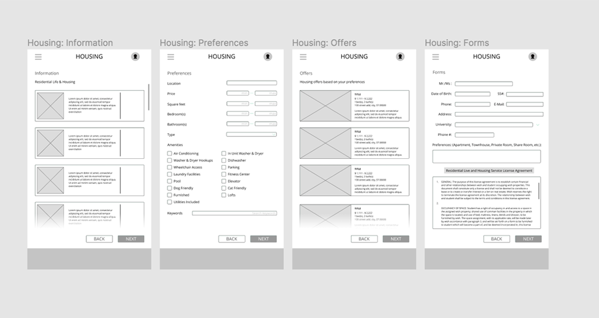

LOCALYZE-REDESIGN
2019
Localyze is a startup company, aiming for facilitating the relocation processes for companies and individuals to move to a foreign country.
Our group chooses to design a mobile app because it is easy to get the notification to keep track of the process, and have better personalization.
UI/UX Design, Redesign
team: Nicole Lee, Joy Cho, Yvonne Wang
duration: 2 weeks
IDEATION

RESEARCH
There are two main target groups of Localyze. One group is people who are trying to immigrate/move to a foreign country to seek employment. The other is companies who are accepting international applicants. Localyze directly impacts foreign employees and applicants and local companies.
The interface will indirectly impact organizations like insurance companies, banks, realtor companies. By using the interface, people do not need to worry about insurance, visa, housing, etc due to the suggestions Localyze gives. Thus, the interface reduces these companies’ opportunities to sell their brands to the users, resulting in a decrease in their sales.
These local companies will have an easier opportunity to hire international employers with less hassle. For international employers, this interface would help them to make decisions with fewer problems since it declutters the whole process of localization.
This interface creates several ethical effects such as transparency, human resources element, and purpose for individual users. To both companies and individual international employers who seek to find a place, problems related to the relocations can be easily explained through the processes Localyze provides, which allows them to improve the economic situation and increase social diversity in the workflow.


WIREFRAME

HI-FIDELITY PROTOTYPE

PROTOTYPE


Click here to view prototype!
REVISION
During the critique, our group received various feedback on our prototype’s usability, affordances, and aesthetics. Some of the key comments were: first, texts and images seem to be small in many of the screens which may lower the legibility. Second, pages that require boxes to be filled in (including “Preferences” and “Forms” page) should have a method to prevent errors.
Thus, we enlarged the texts and images in all the screens and overlays. We also created different screens for “Preferences” and “Forms” in which when the user fails to fill out the required information, the box turns into red, which indicates an error.

Our group chooses to design a mobile app because it is easy to get the notification to keep track of the process, and have better personalization.
The interface will indirectly impact organizations like insurance companies, banks, realtor companies. By using the interface, people do not need to worry about insurance, visa, housing, etc due to the suggestions Localyze gives. Thus, the interface reduces these companies’ opportunities to sell their brands to the users, resulting in a decrease in their sales. These local companies will have an easier opportunity to hire international employers with less hassle. For international employers, this interface would help them to make decisions with fewer problems since it declutters the whole process of localization.
This interface creates several ethical effects such as transparency, human resources element, and purpose for individual users. To both companies and individual international employers who seek to find a place, problems related to the relocations can be easily explained through the processes Localyze provides, which allows them to improve the economic situation and increase social diversity in the workflow.
USABILITY TEST
HYPOTHESIS
The primary function of the app, which is providing convenience for the users who are in the process of relocation, should be clear to the users since the instruction matches with the navigational elements on the application. However, the user may be a little hesitant in selecting “Housing” page on the Dashboard since there are a lot of information. The instruction seems clear for the user to click “Next” to proceed to the next page. With the given specification, the user may take some time to select each option. The user may think the page is crowded depending on the amount of information loaded on each page. The slider is helpful for the user to follow each step without skipping one as it matches the subtitles.
User1
User2
User3
Some users had a hard time locating the “Housing” page because the “Dashboard” page included various phrases that indicated “Housing”. For instance, User C attempted to click any text that had the word housing in the “Dashboard” page. Another issue that users had was when on the “Preferences” page, users had a hard time clicking checkboxes for they were slightly undersized.
The metrics on the table above reflects that all tasks were completed and were fairly easy to perform. Yet, some users made mistakes completing the tasks. Some users had a hard time locating the “Housing” page because the “Dashboard” page included various phrases that indicated “Housing”. For instance, User C attempted to click any text that had the word housing in the “Dashboard” page. Another issue that users had was when on the “Preferences” page, users had a hard time clicking checkboxes for they were slightly undersized.